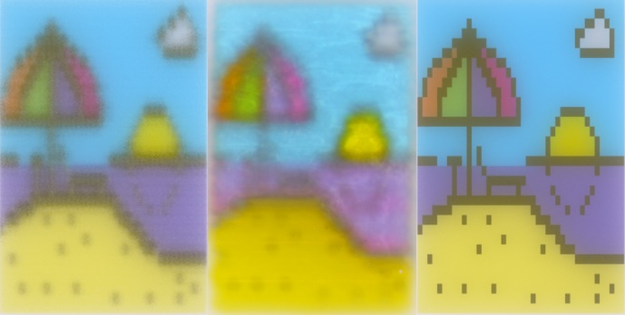
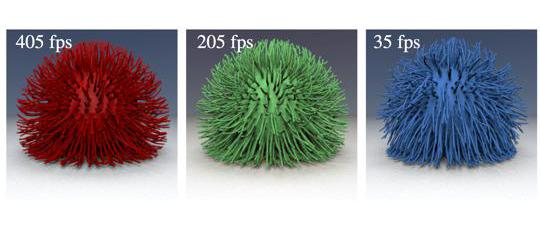
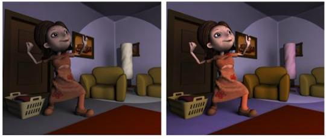
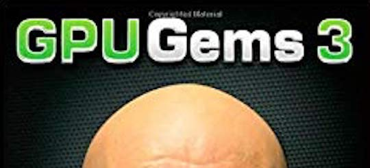

Fabio Pellacini
Full Professor of Computer Science
University of Modena and Reggio Emilia
Bio
I am a Full Professor in Computer Science at the University of Modena and Reggio Emilia. Before then, I was an Associate and Full Professor at in Computer Science at Sapienza Università di Roma, an Assistant and Associate Professor in Computer Science at Dartmouth College, an Ivy League University, a Visiting Assistant Professor in Computing and Information Science at Cornell University and worked in the R&D division of Pixar Animation Studios. I received an MS and Ph.D. in Computer Science from Cornell University and a Laurea degree in Physics from the University of Parma.
I work on using Computer Graphics methods to solve design problems, with emphasis on the design, creative and entertainment industries. The core approach of my group is to combine algorithms and efficient systems to allow professional designers as well as novices to create 3D scenes with significantly less effort. We investigate algorithms based on numerical methods and machine learning, to allow intuitive and interactive editing of complex environments. We made a significant impact in the area of appearance design (patterns, materials, and lights), appearance fabrication, evaluation and visualization of designers' workflows, and cloud-based collaborative design.
For my research contributions, I received a National Science Foundation CAREER Award and an Alfred P. Sloan Fellowship, and have been nominated as a Junior Faculty Fellow for Sapienza's Scuola Superiore di Studi Avanti. I regularly publish in the most prestigious Computer Graphics venues, and have been on the program committee of the most prestigious conferences in the field.
Books
 F. Pellacini. Fondamenti di Programmazione in Python. Apple iBook Store and Amazon Kindle Store.
F. Pellacini. Fondamenti di Programmazione in Python. Apple iBook Store and Amazon Kindle Store.
Publications
Leading Journal Articles: SIGGRAPH, TOG, PAMI, TVCG
- [S43] M. Riso, É. Michel, A. Paris, V. Deschaintre, M. Gaillard, F. Pellacini. Direct Manipulation of Procedural Implicit Surfaces. ACM Transactions on Graphics (Sigraph Asia), 43(6), 2024. Links: paper, video, [supplemental][dmimpl24-supplemental].
-  [S42] E. Luci, F. Pellacini, V. Babaei. Differentiable Modeling of Material Spreading in Inkjet Printing for Appearance Prediction. SIGGRAPH Asia 2024 Conference Papers, 2024. Links: paper.
 [S41] D. Sforza, F. Pellacini. NodeGit: Diffing and Merging Node Graphs. ACM Transactions on Graphics, 42(6), 2023. Links: paper, [supplemental][nodegit23-supplemental].
[S41] D. Sforza, F. Pellacini. NodeGit: Diffing and Merging Node Graphs. ACM Transactions on Graphics, 42(6), 2023. Links: paper, [supplemental][nodegit23-supplemental].- [S40] M. Riso, G. Nazzaro, E. Puppo, A. Jacobson, Q. Zhou, F. Pellacini. BoolSurf : Boolean Operations on Surfaces. ACM Transactions on Graphics (SIGGRAPH Asia 2022), 2022. Links: paper, video.
 [S39] G. Cherchi, F. Pellacini, M. Attene, M. Livesu. Interactive and Robust Mesh Booleans. ACM Transaction on Graphics (SIGGRAPH Asia 2022), 2022. Links: paper, video, youtube.
[S39] G. Cherchi, F. Pellacini, M. Attene, M. Livesu. Interactive and Robust Mesh Booleans. ACM Transaction on Graphics (SIGGRAPH Asia 2022), 2022. Links: paper, video, youtube.- [S38] C. Mancinelli, G. Nazzaro, F. Pellacini, E. Puppo. b/Surf: Interactive Bèzier Splines on Surface Meshes. IEEE Transactions on Visualization and Computer Graphics, 2022. Links: paper, video.
 [S37] G. Nazzaro, E. Puppo, F. Pellacini. GeoTangle: Interactive Design of Geodesic Tangle Patterns on Surfaces. ACM Transaction on Graphics, 2022. Links: paper, video.
[S37] G. Nazzaro, E. Puppo, F. Pellacini. GeoTangle: Interactive Design of Geodesic Tangle Patterns on Surfaces. ACM Transaction on Graphics, 2022. Links: paper, video. [S36] F. A. Fanni, F. Pellacini, R. Scateni, A. Giachetti. Pavel: Decorative Patterns with Packed Volumetric Elements. ACM Transaction on Graphics, 2022. Links: paper.
[S36] F. A. Fanni, F. Pellacini, R. Scateni, A. Giachetti. Pavel: Decorative Patterns with Packed Volumetric Elements. ACM Transaction on Graphics, 2022. Links: paper. [S35] E. Carra, F. Pellacini. SceneGit: a Practical System for Diffing and Merging 3D Environments. ACM Transaction on Graphics (SIGGRAPH Asia 2019), 2019. Links: paper, supplemental.
[S35] E. Carra, F. Pellacini. SceneGit: a Practical System for Diffing and Merging 3D Environments. ACM Transaction on Graphics (SIGGRAPH Asia 2019), 2019. Links: paper, supplemental. [S34] C. Santoni, F. Pellacini. gTangle: a Grammar for the Procedural Generation of Tangle Patterns. ACM Transaction on Graphics (SIGGRAPH Asia 2016), 2016. Links: paper, video, supplemental.
[S34] C. Santoni, F. Pellacini. gTangle: a Grammar for the Procedural Generation of Tangle Patterns. ACM Transaction on Graphics (SIGGRAPH Asia 2016), 2016. Links: paper, video, supplemental. [S33] M. Fratarcangeli, V, Tibaldo, F. Pellacini. Vivace: a Practical Gauss-Seidel Method for Stable Soft Body Dynamics. ACM Transaction on Graphics (SIGGRAPH Asia 2016), 2016. Links: paper, youtube, video.
[S33] M. Fratarcangeli, V, Tibaldo, F. Pellacini. Vivace: a Practical Gauss-Seidel Method for Stable Soft Body Dynamics. ACM Transaction on Graphics (SIGGRAPH Asia 2016), 2016. Links: paper, youtube, video. [S32] C. Calabrese, G. Salvati, M. Tarini, F. Pellacini. cSculpt: A System for Collaborative Sculpting. ACM Transaction on Graphics (SIGGRAPH 2016), 2016. Links: paper, youtube, video.
[S32] C. Calabrese, G. Salvati, M. Tarini, F. Pellacini. cSculpt: A System for Collaborative Sculpting. ACM Transaction on Graphics (SIGGRAPH 2016), 2016. Links: paper, youtube, video. [S31] G. Salvati, C. Santoni, V. Tibaldo, F. Pellacini. MeshHisto: Collaborative Modeling by Sharing and Retargeting Editing Histories. ACM Transaction on Graphics (SIGGRAPH Asia 2015), 2015. Links: paper, youtube, video, supplemental.
[S31] G. Salvati, C. Santoni, V. Tibaldo, F. Pellacini. MeshHisto: Collaborative Modeling by Sharing and Retargeting Editing Histories. ACM Transaction on Graphics (SIGGRAPH Asia 2015), 2015. Links: paper, youtube, video, supplemental. [S30] J. Denning, V. Tibaldo, F. Pellacini. 3DFlow: Continuous Summarization of Mesh Editing Workflows. ACM Transaction on Graphics (SIGGRAPH 2015), 2015. Links: paper, youtube, video.
[S30] J. Denning, V. Tibaldo, F. Pellacini. 3DFlow: Continuous Summarization of Mesh Editing Workflows. ACM Transaction on Graphics (SIGGRAPH 2015), 2015. Links: paper, youtube, video. [S29] A. Attanasi, A. Cavagna, L. Del Castello, I. Giardina, A. Jelic, S. Melillo, L. Parisi, F. Pellacini, E. Shen, E. Silvestri, M. Viale. Greta: A Novel Global and Recursive Tracking Algorithm in Three Dimensions. IEEE Transactions on Pattern Analysis and Machine Intelligence, 2015. Links: paper, supplemental.
[S29] A. Attanasi, A. Cavagna, L. Del Castello, I. Giardina, A. Jelic, S. Melillo, L. Parisi, F. Pellacini, E. Shen, E. Silvestri, M. Viale. Greta: A Novel Global and Recursive Tracking Algorithm in Three Dimensions. IEEE Transactions on Pattern Analysis and Machine Intelligence, 2015. Links: paper, supplemental. [S28] F. Di Renzo, C. Calabrese, F. Pellacini. AppIm: Linear Spaces for Image-based Appearance Editing. ACM Transactions on Graphics (SIGGRAPH Asia 2014), 2014. Links: paper, youtube, video, supplemental, talk.
[S28] F. Di Renzo, C. Calabrese, F. Pellacini. AppIm: Linear Spaces for Image-based Appearance Editing. ACM Transactions on Graphics (SIGGRAPH Asia 2014), 2014. Links: paper, youtube, video, supplemental, talk. [S27] A. Jarabo, B. Masia, A. Bousseau, F. Pellacini, D. Gutierrez. How Do People Edit Light Fields?. ACM Transactions on Graphics (SIGGRAPH 2014), 2014. Links: paper, video, supplemental.
[S27] A. Jarabo, B. Masia, A. Bousseau, F. Pellacini, D. Gutierrez. How Do People Edit Light Fields?. ACM Transactions on Graphics (SIGGRAPH 2014), 2014. Links: paper, video, supplemental.- [S26] J. Denning, F. Pellacini. MeshGit: Diffing and Merging Meshes for Polygonal Modeling. ACM Transactions on Graphics (SIGGRAPH 2013), 2013. Links: paper, talk.
 [S25] Y. Lan, Y. Dong, F. Pellacini, X. Tong. Bi-Scale Appearance Fabrication. ACM Transactions on Graphics (SIGGRAPH 2013), 2013. Links: paper, youtube, video.
[S25] Y. Lan, Y. Dong, F. Pellacini, X. Tong. Bi-Scale Appearance Fabrication. ACM Transactions on Graphics (SIGGRAPH 2013), 2013. Links: paper, youtube, video.- [S24] Y. Dong, X. Tong, F. Pellacini, B. Guo. Printing Spatially Varying Reflectance for Reproducing HDR Images. ACM Transactions on Graphics (SIGGRAPH 2012), 2012. Links: paper, youtube, video.
 [S23] J. Ou, F. Pellacini. LightSlice: Matrix Slice Sampling for the Many-Lights Problem. ACM Transactions on Graphics (SIGGRAPH Asia 2011), 2011. Links: paper, talk.
[S23] J. Ou, F. Pellacini. LightSlice: Matrix Slice Sampling for the Many-Lights Problem. ACM Transactions on Graphics (SIGGRAPH Asia 2011), 2011. Links: paper, talk. [S22] X. An, X. Tong, J. D. Denning, F. Pellacini. AppWarp: Retargeting Measured Materials by Appearance-Space Warping. ACM Transactions on Graphics (SIGGRAPH Asia 2011), 2011. Links: paper, youtube, video, supplemental, talk.
[S22] X. An, X. Tong, J. D. Denning, F. Pellacini. AppWarp: Retargeting Measured Materials by Appearance-Space Warping. ACM Transactions on Graphics (SIGGRAPH Asia 2011), 2011. Links: paper, youtube, video, supplemental, talk. [S21] Y. Dong, X. Tong, F. Pellacini, B. Guo. AppGen: Interactive Material Modeling from a Single Image. ACM Transactions on Graphics (SIGGRAPH Asia 2011), 2011. Links: paper, youtube, video, supplemental.
[S21] Y. Dong, X. Tong, F. Pellacini, B. Guo. AppGen: Interactive Material Modeling from a Single Image. ACM Transactions on Graphics (SIGGRAPH Asia 2011), 2011. Links: paper, youtube, video, supplemental.- [S20] J. Denning, W. B. Kerr, F. Pellacini. MeshFlow: Interactive Visualization of Mesh Construction Sequences. ACM Transactions on Graphics (SIGGRAPH 2011), 2011. Links: paper, youtube, video, supplemental, talk.
 [S19] F. Pellacini. EnvyLight: An Interface for Editing Natural Illumination. ACM Transactions on Graphics (SIGGRAPH 2010), 2010. Links: paper, youtube, video, supplemental, talk.
[S19] F. Pellacini. EnvyLight: An Interface for Editing Natural Illumination. ACM Transactions on Graphics (SIGGRAPH 2010), 2010. Links: paper, youtube, video, supplemental, talk. [S18] W. B. Kerr, F. Pellacini. Toward Evaluating Material Design Interface Paradigms for Novice Users. ACM Transactions on Graphics (SIGGRAPH 2010), 2010. Links: paper, supplemental.
[S18] W. B. Kerr, F. Pellacini. Toward Evaluating Material Design Interface Paradigms for Novice Users. ACM Transactions on Graphics (SIGGRAPH 2010), 2010. Links: paper, supplemental. [S17] Y. Dong, J. Wang, F. Pellacini, X. Tong, B. Guo. Fabricating Spatially-Varying Subsurface Scattering. ACM Transactions on Graphics (SIGGRAPH 2010), 2010. Links: paper, youtube, video.
[S17] Y. Dong, J. Wang, F. Pellacini, X. Tong, B. Guo. Fabricating Spatially-Varying Subsurface Scattering. ACM Transactions on Graphics (SIGGRAPH 2010), 2010. Links: paper, youtube, video. [S16] W. Matusik, B. Ajdin, J. Gu, J. Lawrence, H. Lensch, F. Pellacini, S. Rusinkiewicz. Printing Spatially-Varying Reflectance. ACM Transactions on Graphics (SIGGRAPH Asia 2009), 2009. Links: paper.
[S16] W. Matusik, B. Ajdin, J. Gu, J. Lawrence, H. Lensch, F. Pellacini, S. Rusinkiewicz. Printing Spatially-Varying Reflectance. ACM Transactions on Graphics (SIGGRAPH Asia 2009), 2009. Links: paper. [S15] W. Kerr, F. Pellacini. Toward Evaluating Lighting Design Interface Paradigms for Novice Users. ACM Transactions on Graphics (SIGGRAPH 2009), 2009. Links: paper, supplemental.
[S15] W. Kerr, F. Pellacini. Toward Evaluating Lighting Design Interface Paradigms for Novice Users. ACM Transactions on Graphics (SIGGRAPH 2009), 2009. Links: paper, supplemental. [S14] Y. Song, X. Tong, F. Pellacini, P. Peers. SubEdit: A Representation for Editing Measured Heterogeneous Subsurface Scattering. ACM Transactions on Graphics (SIGGRAPH 2009), 2009. Links: paper, video, supplemental.
[S14] Y. Song, X. Tong, F. Pellacini, P. Peers. SubEdit: A Representation for Editing Measured Heterogeneous Subsurface Scattering. ACM Transactions on Graphics (SIGGRAPH 2009), 2009. Links: paper, video, supplemental. [S13] E. Cheslack-Postava, R. Wang, O. Akerlund, F. Pellacini. Fast, Realistic Lighting and Material Design using Nonlinear Cut Approximation. ACM Transactions on Graphics (SIGGRAPH Asia 2008), 2008. Links: paper, video.
[S13] E. Cheslack-Postava, R. Wang, O. Akerlund, F. Pellacini. Fast, Realistic Lighting and Material Design using Nonlinear Cut Approximation. ACM Transactions on Graphics (SIGGRAPH Asia 2008), 2008. Links: paper, video.- [S12] X. An, F. Pellacini. AppProp: All-Pairs Appearance-Space Edit Propagation. ACM Transactions on Graphics (SIGGRAPH 2008), 2008. Links: paper, video, supplemental, talk.
- [S11] F. Pellacini, J. Lawrence. AppWand: Editing Measured Materials using Appearance-Driven Optimization. ACM Transactions on Graphics (SIGGRAPH 2007), 2007. Links: paper, video, talk.
- [S10] M. Hasan, F. Pellacini, K. Bala. Matrix Row-Column Sampling for the Many Light Problem. ACM Transactions on Graphics (SIGGRAPH 2007), 2007. Links: paper, talk.
 [S09] F. Pellacini, F. Battaglia, K. Morley, A. Finkelstein. Lighting with Paint. ACM Transactions on Graphics, 2007. Links: paper, video.
[S09] F. Pellacini, F. Battaglia, K. Morley, A. Finkelstein. Lighting with Paint. ACM Transactions on Graphics, 2007. Links: paper, video.- [S08] M. Hasan, F. Pellacini, K. Bala. Direct-to-Indirect Transfer for Cinematic Relighting. ACM Transactions on Graphics (SIGGRAPH 2006), 2006. Links: paper, videotalk.
- [S07] F. Pellacini. User-Configurable Automatic Shader Simplification. ACM Transactions on Graphics (SIGGRAPH 2005), 2005. Links: paper, talk.
 [S06] F. Pellacini, K. Vidimce, A. Lefohn, A. Mohr, M. Leone, J. Warren. Lpics: a Hybrid Hardware-Accelerated Relighting Engine for Computer Cinematography. ACM Transactions on Graphics (SIGGRAPH 2005), 2005. Links: paper, video.
[S06] F. Pellacini, K. Vidimce, A. Lefohn, A. Mohr, M. Leone, J. Warren. Lpics: a Hybrid Hardware-Accelerated Relighting Engine for Computer Cinematography. ACM Transactions on Graphics (SIGGRAPH 2005), 2005. Links: paper, video.- [S05] R. Dumont, F. Pellacini, J. Ferwerda. Perceptually-Driven Decision Theory for Interactive Realistic Rendering. ACM Transactions on Graphics, 2003. Links: paper.
- [S04] F. Pellacini, P. Tole, D. Greenberg. A User Interface for Interactive Cinematic Shadow Design. ACM Transactions on Graphics (SIGGRAPH 2002), 2002. Links: paper, talk.
- [S03] P. Tole, F. Pellacini, B. Walter, D. Greenberg. Interactive Global Illumination in Dynamic Scenes. ACM Transactions on Graphics (SIGGRAPH 2002), 2002. Links: paper, video, talk.
 [S02] J. Kim, F. Pellacini. Jigsaw Image Mosaics. ACM Transactions on Graphics (SIGGRAPH 2002), 2002. Links: paper.
[S02] J. Kim, F. Pellacini. Jigsaw Image Mosaics. ACM Transactions on Graphics (SIGGRAPH 2002), 2002. Links: paper. [S01] F. Pellacini, J. Ferwerda, D. Greenberg. Toward a Psychophysically-based Light Reflection model for Image Synthesis. SIGGRAPH 2000, 2000. Links: paper, talk.
[S01] F. Pellacini, J. Ferwerda, D. Greenberg. Toward a Psychophysically-based Light Reflection model for Image Synthesis. SIGGRAPH 2000, 2000. Links: paper, talk.
Journals
 [J20] D. Sforza, F. Pellacini. Numerical approximations for energy preserving microfacet models. Computer Graphics Forum, 114, 2023. Links: paper.
[J20] D. Sforza, F. Pellacini. Numerical approximations for energy preserving microfacet models. Computer Graphics Forum, 114, 2023. Links: paper.- [J19] M. Riso, D. Sforza, F. Pellacini pOp: Parameter Optimization of Differentiable Vector Patterns. Computer Graphics Forum, 4 (41), 2022. Links: paper.
 [J18] T. G. Dulecha, F. A. Fanni, F. Ponchio, F. Pellacini, A. Giachetti Neural reflectance transformation imaging. The Visual Computer, 36 (10), 2161–2174, 2020. Links: paper.
[J18] T. G. Dulecha, F. A. Fanni, F. Ponchio, F. Pellacini, A. Giachetti Neural reflectance transformation imaging. The Visual Computer, 36 (10), 2161–2174, 2020. Links: paper. [J17] E Carra, C. Santoni, F. Pellacini. Grammar-based procedural animations for motion graphics. Computers & Graphics, 2019. Links: paper, youtube, video, supplemental.
[J17] E Carra, C. Santoni, F. Pellacini. Grammar-based procedural animations for motion graphics. Computers & Graphics, 2019. Links: paper, youtube, video, supplemental. [J16] C. Santoni, G. Salvati, V. Tibaldo, F. Pellacini. LevelMerge: Collaborative Game Level Editing by Merging Labeled Graphs. IEEE CG&A, 2016. Links: paper, youtube, video.
[J16] C. Santoni, G. Salvati, V. Tibaldo, F. Pellacini. LevelMerge: Collaborative Game Level Editing by Merging Labeled Graphs. IEEE CG&A, 2016. Links: paper, youtube, video.- [J15] T.-W. Schmidt, F. Pellacini, D. Nowrouzezahrai, W. Jarosz, C. Dachsbacher. State of the Art in Artistic Editing of Appearance, Lighting, and Material. Computer Graphics Forum, 2016. Links: paper.
-  [J14] M. Fratarcangeli, F. Pellacini. Scalable Partitioning for Parallel Position Based Dynamics. Computer Graphics Forum (Eurographics), 2015. Links: paper, video.
- [J13] M. Fratarcangeli, F. Pellacini. A GPU-Based Implementation of Position-Based Dynamics got Interactive Deformable Bodies. Journal of Graphics Tools (extended version of SIGGRAD 2014), 2015. Links: paper.
 [J12] O. Karlík, M. Růžička, V. Gassenbauer, F. Pellacini, J. Křivánek. Toward Evaluating the Usefulness of Global Illumination for Novices in Lighting Design Tasks. IEEE Transactions on Visualization and Computer Graphics, 2014. Links: paper, video, supplemental.
[J12] O. Karlík, M. Růžička, V. Gassenbauer, F. Pellacini, J. Křivánek. Toward Evaluating the Usefulness of Global Illumination for Novices in Lighting Design Tasks. IEEE Transactions on Visualization and Computer Graphics, 2014. Links: paper, video, supplemental. [J11] F. Banterle, M. Callieri, M. Dellepiane, M. Corsini, F. Pellacini, R. Scopigno. EnvyDepth: An Interface for Recovering Local Natural Illumination from Environment Maps. Computer Graphics Forum (Eurographics), 2013. Links: paper, supplemental.
[J11] F. Banterle, M. Callieri, M. Dellepiane, M. Corsini, F. Pellacini, R. Scopigno. EnvyDepth: An Interface for Recovering Local Natural Illumination from Environment Maps. Computer Graphics Forum (Eurographics), 2013. Links: paper, supplemental. [J10] J. Ou, O. Karlik, J. Krivanek, F. Pellacini. Evaluating Progressive Rendering Methods in Appearance Design Tasks. IEEE Computer Graphics and Applications, 2013. Links: paper, video, supplemental.
[J10] J. Ou, O. Karlik, J. Krivanek, F. Pellacini. Evaluating Progressive Rendering Methods in Appearance Design Tasks. IEEE Computer Graphics and Applications, 2013. Links: paper, video, supplemental. [J09] J. Ou, F Xie, P. Krishnamachari, F. Pellacini. ISHair: Importance Sampling for Hair Scattering. Computer Graphics Forum (EGRS 2012), 2012. Links: paper, video, supplemental.
[J09] J. Ou, F Xie, P. Krishnamachari, F. Pellacini. ISHair: Importance Sampling for Hair Scattering. Computer Graphics Forum (EGRS 2012), 2012. Links: paper, video, supplemental.- [J08] X. An, F. Pellacini. User Controllable Color Transfer. Computer Graphics Forum (EG 2010), 2010. Links: paper.
 [J07] J. Ou, F. Pellacini. SafeGI: Type Checking to Improve Correctness in Rendering System Implementation. Computer Graphics Forum (EGSR 2010), 2010. Links: paper.
[J07] J. Ou, F. Pellacini. SafeGI: Type Checking to Improve Correctness in Rendering System Implementation. Computer Graphics Forum (EGSR 2010), 2010. Links: paper. [J06] W. B. Kerr, F. Pellacini, J. Denning. BendyLights: Artistic Control of Direct Illumination by Curving Light Rays. Computer Graphics Forum (EGSR), 2010. Links: paper, video.
[J06] W. B. Kerr, F. Pellacini, J. Denning. BendyLights: Artistic Control of Direct Illumination by Curving Light Rays. Computer Graphics Forum (EGSR), 2010. Links: paper, video.- [J06] J. Obert, F. Pellacini, S. Pattanaik. Visibility Editing For All-Frequency Shadow Design. Computer Graphics Forum (EGSR 2010), 2010. Links: paper, video.
 [J04] M. Hasan, E. Velazquez-Armendariz, F. Pellacini, K. Bala. Tensor Clustering for Rendering Many-Light Animations. Computer Graphics Forum (EGSR 2008), 2008. Links: paper, video talk.
[J04] M. Hasan, E. Velazquez-Armendariz, F. Pellacini, K. Bala. Tensor Clustering for Rendering Many-Light Animations. Computer Graphics Forum (EGSR 2008), 2008. Links: paper, video talk.-  [J03] J. Obert, J. Krivanec, F. Pellacini, D. Sykora, S. Pattanaik. iCheat: A Representation for Artistic Control of Indirect Cinematic Lighting. Computer Graphics Forum (EGSR 2008), 2008. Links: paper, talk.
 [J02] L. Lorigo, M. Haridasan, H. BrynjarsdÑttir, L. Xia, L. Granka, F. Pellacini, B. Pan, T. Joachims, G. Gay. Eye Tracking and Online Search: Lessons Learned and Challenges Ahead. Journal of the American Society for Information Science and Technology (JASIST), 2008. Links: paper.
[J02] L. Lorigo, M. Haridasan, H. BrynjarsdÑttir, L. Xia, L. Granka, F. Pellacini, B. Pan, T. Joachims, G. Gay. Eye Tracking and Online Search: Lessons Learned and Challenges Ahead. Journal of the American Society for Information Science and Technology (JASIST), 2008. Links: paper. [J01] L. Lorigo, F. Pellacini. Frequency and Structure of Long Distance Scholarly Collaborations in a Physics Community. Journal of the American Society for Information Science and Technology (JASIST), 2007. Links: paper.
[J01] L. Lorigo, F. Pellacini. Frequency and Structure of Long Distance Scholarly Collaborations in a Physics Community. Journal of the American Society for Information Science and Technology (JASIST), 2007. Links: paper.
Conferences
- [C18] A. D'Orazio, D. Sforza, F. Pellacini, I. Masi. Environment Maps Editing using Inverse Rendering and Adversarial Implicit Functions. In STAG, 2024. Links: paper.
- [C17] V. Albano, F. A. Fanni, F. Pellacini, A. Giachetti. FloralSurf: Space-Filling Geodesic Ornaments. In EGSR, 2023. Links: paper.
 [C16] M. Riso, F. Pellacini. pEt: Direct Manipulation of Differentiable Vector Patterns. In EGSR, 2023. Links: paper, video.
[C16] M. Riso, F. Pellacini. pEt: Direct Manipulation of Differentiable Vector Patterns. In EGSR, 2023. Links: paper, video.- [C15] D. Sforza, F. Pellacini. Enforcing Energy Preservation in Microfacet Models. In STAG, 2022. Links: paper.
 [C14] F. M. Caputo, S. Jacota, S. Krayevskyy, M. Pesavento, F. Pellacini, A. Giachetti. XR-Cockpit: a comparison of VR and AR solutions on an interactive training station. In ETFA, 2020. Links: paper.
[C14] F. M. Caputo, S. Jacota, S. Krayevskyy, M. Pesavento, F. Pellacini, A. Giachetti. XR-Cockpit: a comparison of VR and AR solutions on an interactive training station. In ETFA, 2020. Links: paper.- [C13] G. Nazzaro, E. Carra, F. Pellacini. Yocto/GL: A Data-Oriented Library for Physically-Based Graphics. In STAG, 2019. Links: paper.
- [C12] C. Joppi, M. Godi, A. Giachetti, F. Pellacini, M. Cristani. Texture Retrieval in the Wild Through Detection-Based Attributes. ICIAP, 2019. Links: paper.
 [C11] M. Godi, C. Joppi, A. Giachetti, F. Pellacini, M. Cristani. Texel-Att: Representing and Classifying Element-based Textures by Attributes. BMVC, 2019. Links: paper.
[C11] M. Godi, C. Joppi, A. Giachetti, F. Pellacini, M. Cristani. Texel-Att: Representing and Classifying Element-based Textures by Attributes. BMVC, 2019. Links: paper. [C10] E. Carra, C. Santoni, F. Pellacini. gMotion: A Spatio-Temporal Grammar for the Procedural Generation of Motion Graphics. GI, 2019. Links: paper, youtube, video, supplemental.
[C10] E. Carra, C. Santoni, F. Pellacini. gMotion: A Spatio-Temporal Grammar for the Procedural Generation of Motion Graphics. GI, 2019. Links: paper, youtube, video, supplemental.- [C09] C. Calabrese, M. Fratarcangeli, F. Pellacini. sLayer: a System for Multi-Layered Material Sculpting. EGSR, EI&I Track, 2017. Links: paper, youtube, video.
 [C08] M. Fratarcangeli, F. Pellacini. Towards a Massively Parallel Solver for Position Based Dynamics. SIGRAD 2014. Links: paper.
[C08] M. Fratarcangeli, F. Pellacini. Towards a Massively Parallel Solver for Position Based Dynamics. SIGRAD 2014. Links: paper. [C07] T.-W. Schmidt, F. Pellacini, D. Nowrouzezahrai, W. Jarosz, C. Dachsbacher. State of the Art in Artistic Editing of Appearance, Lighting, and Material. Eurographics State of the Art Reports 2014. Links: paper.
[C07] T.-W. Schmidt, F. Pellacini, D. Nowrouzezahrai, W. Jarosz, C. Dachsbacher. State of the Art in Artistic Editing of Appearance, Lighting, and Material. Eurographics State of the Art Reports 2014. Links: paper.- [C06] J. Ou, F. Xie, P. Krishnamachari, F. Pellacini. ISHair: Importance Sampling for Hair Scattering. ACM SIGGRAPH 2012 Talks, 2012.
 [C05] S. Bratus, A. Hansen, F. Pellacini, A. Shubina. Backhoe, a Packet Trace and Log Browser. Workshop for Visualization for Cyber Security (VizSEC), 2008. Links: paper.
[C05] S. Bratus, A. Hansen, F. Pellacini, A. Shubina. Backhoe, a Packet Trace and Log Browser. Workshop for Visualization for Cyber Security (VizSEC), 2008. Links: paper.- [C04] H. Li, F. Pellacini, K. Torrance. A Hybrid Monte Carlo Method for Accurate and Efficient Subsurface Scattering. Eurographics Symposium on Rendering, 2005. Links: paper, talk.
- [C03] J. Ferwerda, F. Pellacini. Functional Difference Predictors (FDPs): measuring meaningful image differences. Asilomar Conference on Signals, Systems, and Computers, 2003. Links: paper.
 [C02] R. Dumont, F. Pellacini, J. Ferwerda. Perceptually-based texture caching for hardware rendering. Eurographics Workshop on Rendering, 2001. Links: paper.
[C02] R. Dumont, F. Pellacini, J. Ferwerda. Perceptually-based texture caching for hardware rendering. Eurographics Workshop on Rendering, 2001. Links: paper. [C01] J. Ferwerda, F. Pellacini, D. Greenberg. A Psychophysically-Based Model of Surface Gloss Perception. Human vision and electronic imaging VI, 2001. Links: paper.
[C01] J. Ferwerda, F. Pellacini, D. Greenberg. A Psychophysically-Based Model of Surface Gloss Perception. Human vision and electronic imaging VI, 2001. Links: paper.
Book chapters
-  [B03] F. Pellacini, M. Hašan, K. Bala. Interactive Cinematic Relighting with Global Illumination. In H. Nguyen ed., GPU Gems 3, Addison-Wesley, 2007.
- [B02] F. Pellacini, K. Vidimče. Cinematic Lighting. In R. Fernando ed., GPU Gems, Addison-Wesley, 2007.
 [B01] M. Bunnel, F. Pellacini. Shadow Map Antialiasing. In R. Fernando ed., GPU Gems, Addison-Wesley, 2007.
[B01] M. Bunnel, F. Pellacini. Shadow Map Antialiasing. In R. Fernando ed., GPU Gems, Addison-Wesley, 2007.
Courses
University Courses
- F. Pellacini. Computer Graphics. University of Modena and Reggio Emilia, 2024, 2025
- F. Pellacini. Introduction to Scientific Python. University of Modena and Reggio Emilia, 2023, 2024
- F. Pellacini. Programming 1. University of Modena and Reggio Emilia, 2023, 2024
- F. Pellacini. Computer Graphics. Sapienza University of Rome, 2017, 2020a, 2020b, 2021, 2022.
- F. Pellacini. Fundamentals of Computer Graphics. Sapienza University of Rome, 2012, 2013a, 2013b, 2014, 2015, 2016, 2017, 2020a, 2020b, 2021, 2022.
- I. Masi, F. Pellacini. Fondamenti di Programmazione (Lab). Sapienza University of Rome.
- F. Pellacini, R. Silvestri, A. Monti. Fondamenti di Programmazione. Sapienza University of Rome, 2011, 2012, 2013, 2014, 2015, 2016.
- F. Pellacini. Physics Programming. University of Verona, 2016, 2017.
- F. Pellacini. Computer Graphics. Dartmouth College, 2005, 2006, 2008, 2009.
- F. Pellacini. Topics in Computer Graphics. Dartmouth College, 2006, 2008.
- F. Pellacini. Projects in Digital Art. Dartmouth College, 2007, 2008, 2010.
- F. Pellacini. Programming for Interactive Digital Art. Dartmouth College, 2010.
- F. Pellacini. Concepts in Computing. Dartmouth College, 2007.
- F. Pellacini, D. P. Greenberg. Advanced Computer Animation. Cornell, 2005.
- F. Pellacini, D. P. Greenberg. Computer Animation. Cornell, 2004.
Conference Courses
- C. Boyd, K. Fatahalian, T. Forsyth, M. Houston, A. Lefohn, D. Luebke, A. Munshi, J. Olick, J. Owens, F. Pellacini, M. Pharr, J. Shopf. Beyond Programmable Shading. ACM SIGGRAPH, 2008.
- M. Olano, D. Blythe, L. Gritz, M. Kilgard, M. McCool, F. Pellacini, T. Scheuermann. GPU Shading and Rendering. ACM SIGGRAPH, 2006.